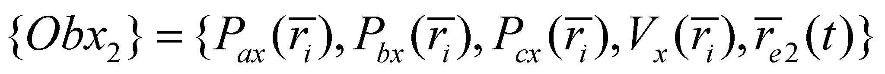
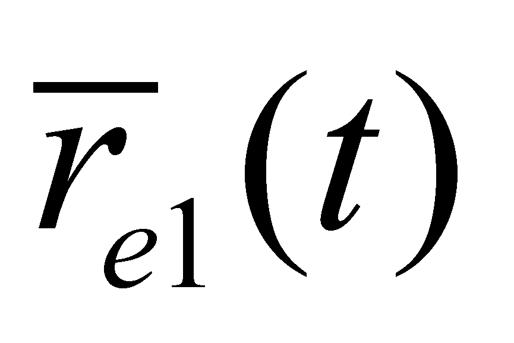
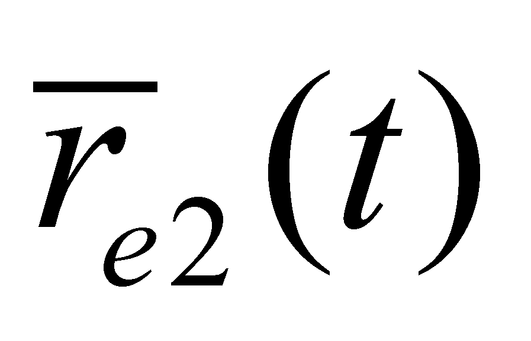
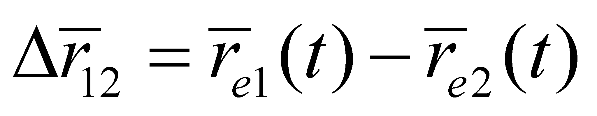
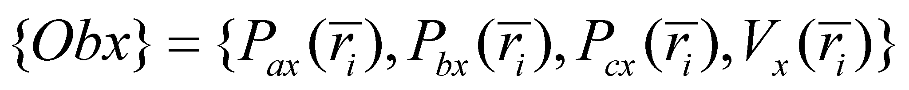

|
|
|
Let us further assume that at the moment t, there is another external material object which is identical with the first one, whose internal representation is the concrete abstract object Obx2:
 (9.2.3.1)
The spatial-temporal exclusion principle of the compact objects74 postulates that the two objects with a simultaneous existence cannot be placed on the same spatial domain, which means that the second object must have a spatial position so that their internal domains to be disjoint, or at most, adjacent. Consequently, the two objects (more exactly, their internal T references) shall have different external spatial positions and . In case of the two identical objects, their different spatial positions are the only properties which allow the distinction (separation, differentiation) of each object. As we have mentioned in chapter 3, for achieving the differentiation between two objects, there must be a property difference (contrast) between them, which may be either of quantitative or qualitative nature, or both. In the example below, the contrast is a vector:
 (9.2.3.2)
Definition 9.2.3.1: The properties of the abstract objects which consist of values (qualitative and/or quantitative) differences which allow the objects differentiation, are named specific properties (synonym - differential properties).
Except the external position, both the property sets and the amounts of the two support domains of the two objects are identical, otherwise speaking, there are no differences between the properties of the same type (homologue) belonging to the two objects.
Definition 9.2.3.2: The properties of a systemic set of abstract objects which do not have value differences, either they are qualitative and/or quantitative, are named common properties of that set of objects.
The common properties of the two objects Obx1 and Obx2, which exclude the external spatial position (specific attribute), make-up the model of another abstract object which does not have any longer a correspondent into the external world of IPS (it is a simple finite information amount associated to an internal ISS):
 (9.2.3.3)
Definition 9.2.3.3: All the abstract objects which have the same model make-up a class of abstract objects.
Definition 9.2.3.4: The abstract object made-up from the common properties of a set of abstract objects is named class model.
We have previously noticed that the abstract concrete object is a representation of a single external object into the memory of an IPS. Now, we are finding that the abstract object known as class is a representation (into IPS memory) of a set of objects.
Definition 9.2.3.5: The set of objects which belong to a specific class represents the support set of that particular class.
Comment 9.2.3.1: After the introduction of the support set notion on a class of abstract objects, we may notice that the abstract concrete (sensorial) objects always have a single object as their support (the mathematic equivalent of a set with a single element, that is a prohibited notion, because according to the objectual philosophy, the set of objects and the single object are different notions).
In general, the support set of a class of abstract objects is non-defined as a number of elements, but this number is not so important for the abstraction process (it is enough that the support set to be systemic).
As for the above-mentioned case, the support set of the class Obx has only two elements. Similarly with the issues presented in chapter 2, the support of a distribution as a set of the singular values which can be assigned to the independent variable, and as regards the classes, there is also a set of singular (individual, particular) objects which have the same model (the class model), but different specific attributes. A specific element of the support set (a particular object of the class) may be obtained by means of association (addition) to the class model of at least one attribute specific to that object.
Definition 9.2.3.6: A singular (particular) object belonging to the support set of a class, obtained through the association to the class model of a specific attribute of that object, is named the instance of that class.
Any of the objects Obx1
or Obx2
are instances (particular objects) of the class Obx
obtained as a result of the association to the common model class of
a spatial position specific to each object.
74 Assuming that both Obx1 and Obx2 are compact objects.
Copyright © 2006-2011 Aurel Rusu. All rights reserved.